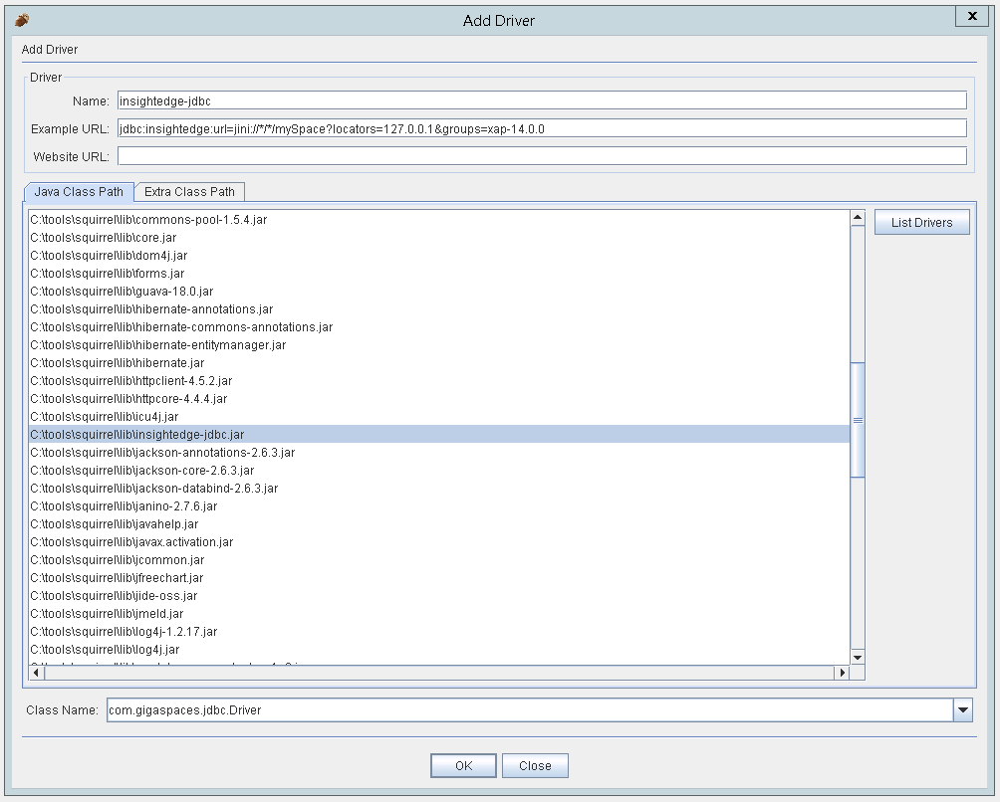
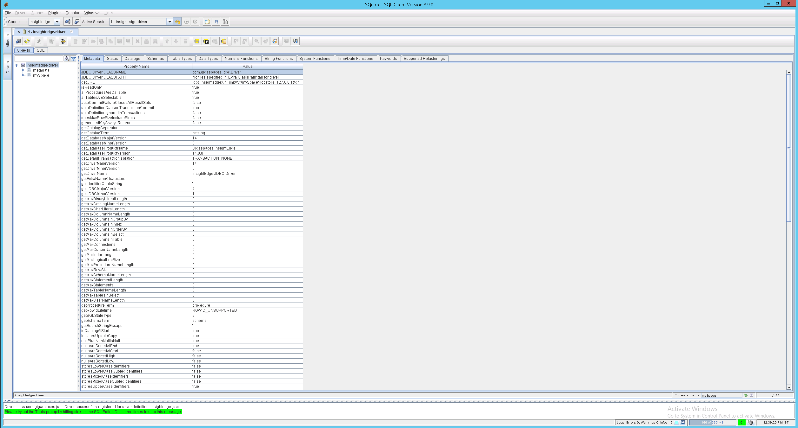

<XAP-HOME>\lib\required) to the squirreL lib folder.<XAP-HOME>\insightedge\lib\jdbc) to the squirreL lib folder.Click the Drivers vertical tab on the left, and then click + to add a new driver. 
Click the Aliases vertical tab on the left, and then click + to add a new connection. Sample URL: jdbc:insightedge:url=jini://*/*/mySpace?locators=127.0.0.1&groups=xap-14.0.0

Create a connection to the XAP data grid. 
Run a test query, for example SELECT * FROM Product; (the data grid was filled with Product objects in advance).
 ```
```